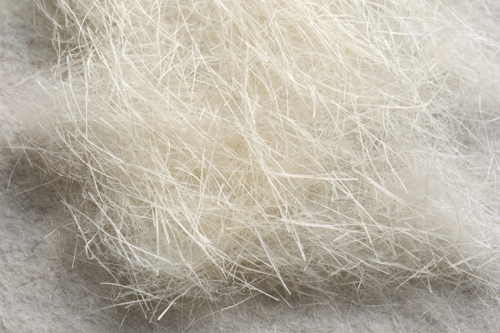

From Wikipedia, the free encyclopedia
| Fiberglass | |
|---|---|
 Chopped-strand glass fibre mat | |
| Type | Fibre-reinforced plastic / insulation material |
| Base material | Silica-based glass (commonly E-glass) |
| Matrix | Polyester, vinyl ester or epoxy resin (in composites) |
| Uses | Boats, car bodies, pipes, insulation, printed circuit boards |
Fiberglass (American English; fibreglass in Commonwealth English) is a material made of numerous extremely fine fibres of glass. It is used in two main forms: as glass-reinforced plastic (GRP/FRP), where the fibres reinforce a polymer resin to make a strong, light, corrosion-resistant composite; and as loose glass wool, a fluffy mass of fibres used for thermal and acoustic insulation and for filtration.
Glass fibres are drawn from molten glass (typically E-glass, a calcium aluminoborosilicate) extruded through hundreds of tiny bushings and wound at high speed, producing filaments around 9–25 µm in diameter. For composites the fibres are supplied as rovings, woven fabrics or chopped-strand mat, then combined with resin by hand lay-up, spraying, filament winding, pultrusion or resin-transfer moulding, and cured. For insulation, molten glass is spun or blown into wool and bonded with a resin binder into batts and rolls — characteristically pink or yellow.
Glass fibres were known in antiquity as decoration, but mass production began in the 1930s: Games Slayter's patents and the formation of Owens-Corning (1938) commercialised both insulation wool and reinforcing fibres. The combination with polyester resins during and after the Second World War created modern GRP, used for radar domes and then boat hulls; the 1953 Chevrolet Corvette was an early all-fibreglass car body.
Fibreglass composites have lower stiffness and strength than carbon fibre composites but are far cheaper, non-conductive and transparent to radio waves. Applications include boat hulls and decks, swimming pools, storage tanks, pipes, wind-turbine blades, automotive panels, bathtub and shower units, and the woven glass-epoxy laminate (FR-4) of printed circuit boards. Loose fibres irritate skin and lungs, so handling requires protection; some special-purpose glass fibres are regulated like asbestos, though ordinary insulation wool is classified as not classifiable as to carcinogenicity.